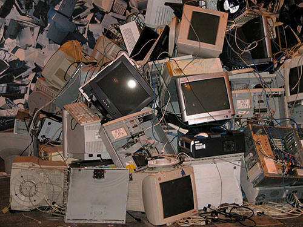

What is E-Waste?
The Oxford Dictionaries definition of E-Waste is:
Discarded electronic appliances such as mobile phones, computers, and televisions.
Wikipedia’s definition of E-Waste is:
E-waste or electronic waste is created when an electronic product is discarded after the end of its useful life.